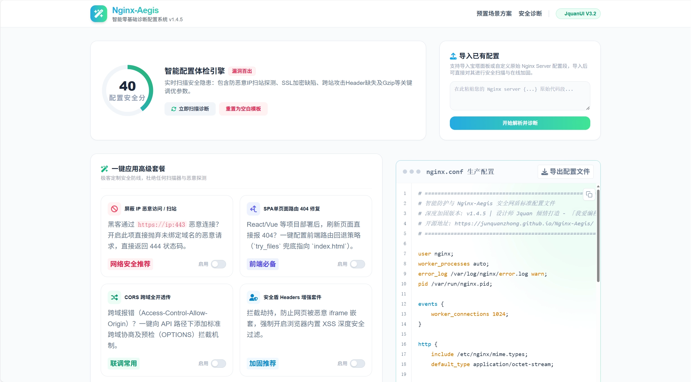
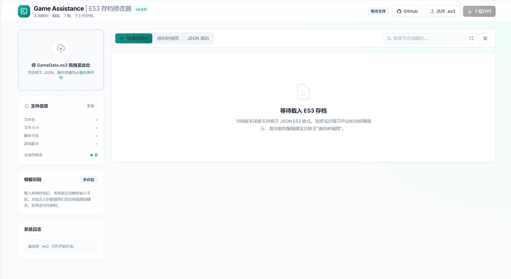
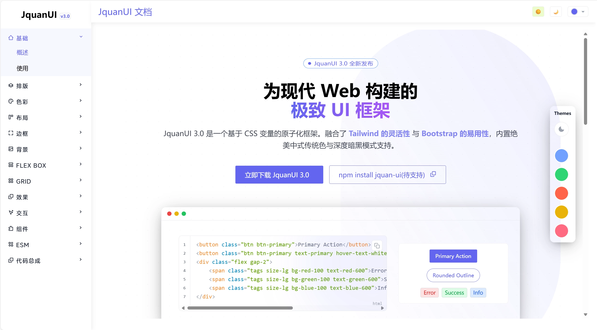

开发工具
Nginx Aegis
面向独立开发者与前端开发者的 Nginx 可视化诊断配置器，把配置检查与调整放在一个界面里。
Nginx配置诊断Web App
找到 4 个应用

开发工具
面向独立开发者与前端开发者的 Nginx 可视化诊断配置器，把配置检查与调整放在一个界面里。
安全工具
兼容 Google Authenticator 的 TOTP 二步验证器，为双重验证提供一个简洁的浏览器入口。

实用工具
纯静态的 ES3 格式游戏存档在线修改器，让存档处理有一个直接、清晰的操作界面。

开发工具
CSS 原子引擎样式框架，也是这个知识库的界面底座。进入文档中心，探索样式与组件的组合方式。
试试应用名称或用途，也可以重新浏览全部应用。
工具之外，也记录过程。
关于开发和日常办公的经验，都留在知识库里。